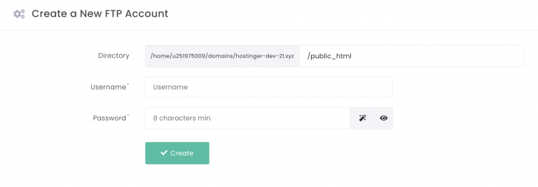
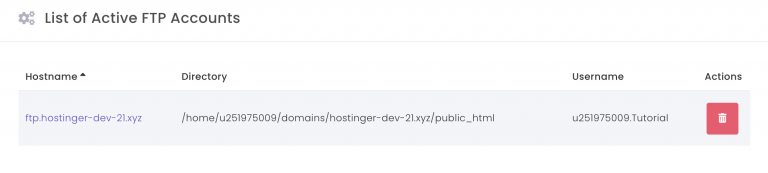
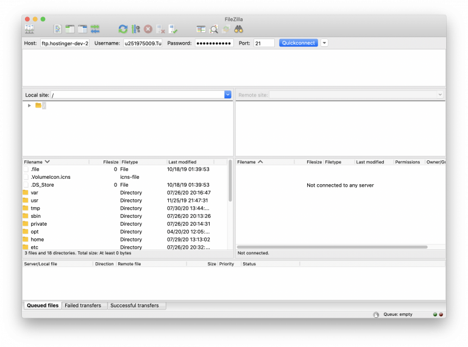

FTP, ejemplos.
Creado por Erick Escamilla C.
¿Qué es el FTP?
El FTP (Protocolo de Transferencia de Archivos) se utiliza para comunicar y transferir archivos entre ordenadores en una red TCP/IP (Protocolo de Control de Transmisión/Protocolo de Internet), también conocida como Internet. Los usuarios, a los que se les ha concedido acceso, pueden recibir y transferir archivos en el servidor del Protocolo de Transferencia de Archivos (también conocido como host/sitio FTP).
¿Cómo funciona el FTP?
La conexión FTP necesita que dos partes se establezcan y se comuniquen en la red. Para ello, los usuarios necesitan tener permiso proporcionando credenciales al servidor FTP. Algunos servidores FTP públicos pueden no requerir credenciales para acceder a sus archivos. Esta práctica es común en el llamado FTP anónimo.
Hay dos canales de comunicación distintos mientras se establece una conexión FTP. El primero se llama canal de comandos, donde se inicia la instrucción y la respuesta. El otro se llama canal de datos, donde se produce la distribución de datos.
Para obtener o transferir un archivo, un usuario autorizado utilizará el protocolo para solicitar la creación de cambios en el servidor. A cambio, el servidor concederá ese acceso. Esta sesión se conoce como el modo de conexión activa.
La distribución en modo activo puede tener un problema si un cortafuegos protege la máquina del usuario. El cortafuegos no suele permitir ninguna sesión no autorizada de una parte externa.
El modo pasivo se utiliza si se produce ese problema. En este modo, el usuario establece tanto el canal de comandos como el de datos. Este modo pide al servidor que escuche en lugar de intentar crear una conexión con el usuario.
Cómo utilizar el FTP
Hay tres enfoques sobre cómo establecer una conexión FTP. Un método muy sencillo es el uso de un FTP de línea de comandos, como el uso de Command prompt para Windows o Terminal en Mac/Linux. Los desarrolladores todavía lo utilizan hoy en día para transferir archivos mediante FTP.
Un usuario también puede utilizar un navegador web para comunicarse con el servidor FTP. Un navegador web es más conveniente cuando los usuarios quieren acceder a grandes directorios en el servidor. Sin embargo, suele ser menos fiable y más lento que el uso de un programa FTP dedicado.
Hoy en día, la práctica más común para utilizar FTP, especialmente para un desarrollador web, es mediante el uso de un cliente FTP.
Un cliente FTP proporciona más libertad en comparación con la línea de comandos y el navegador web. También es más fácil de gestionar y más potente en comparación con los otros métodos.
También hay más funciones disponibles mientras se utiliza un cliente de este tipo. Por ejemplo, permite a los usuarios transferir un archivo grande y utilizar la utilidad de sincronización.
Cómo conectarse al FTP de Hostinger
Hay muchos clientes FTP para elegir. Desde aplicaciones gratuitas de código abierto hasta opciones premium. Para el propósito de este artículo, usaremos FileZilla, un cliente FTP de código abierto y popular.
Primero necesitaremos un servidor FTP, y podemos configurar uno utilizando nuestra cuenta de Hostinger.
-
Acceda a su cuenta de Hostinger y navegue hasta la sección de cuentas FTP
-
Cree una nueva cuenta FTP rellenando un nuevo nombre de usuario y contraseña
-
Verás nuevos servidores FTP (Hostname) bajo la lista de cuentas FTP activas
-
En FileZilla, introduzca el nombre de host, el nombre de usuario y la contraseña y pulse el botón Quickconnect. También puedes rellenar el número de puerto. De lo contrario, el puerto 21 se utiliza por defecto.
- La ventana de estado le indicará si está conectado al servidor FTP. Como puede ver en la ventana del Sitio Remoto, estos son los archivos que tiene el servidor.
Servidores de protocolo de transferencia de archivos
Con estas soluciones, podrá programar transferencias masivas a intervalos, mediante activadores de eventos, o incluso por la noche o los fines de semana. Los mejores proveedores de FTP tienen características que pueden ayudarle en caso de recuperación de desastres. La mayoría de los servidores FTP soportan los protocolos FTPS y SFTP que le dan más seguridad que los servidores FTP tradicionales.
Estos protocolos encriptan los archivos durante la transmisión y, por tanto, son más seguros. Los servidores FTP seguros pueden cifrar los datos en reposo y en movimiento.
Lista de servidores FTP populares en línea
Aquí está la lista de servidores FTP populares:
- JSCAPE
- GoAnywhere
- Progress MOVEit
- FileZilla
- Cerberus
- Globalscape
- Titan Server
- IIS FTPS Server
- Core FTP
- Sysax Multi Server
- OpenSSH
| Herramientas | Mejor para | Acerca de la herramienta | Protocolos compatibles | Prueba gratuita | Precio |
|---|---|---|---|---|---|
|
JSCAPE
|
Gestione de forma segura sus procesos de transferencia de archivos. | Software y servicios de transferencia de archivos gestionados. | FTP, FTPS, SFTP, AS2, OFTP2 y más | Disponible durante 7 días | Obtenga un presupuesto. |
|
GoAnywhere
|
Intercambio seguro de datos. | Solución de transferencia de archivos gestionada | FTP, SFTP, FTPS, HTTPS y más | Disponible durante 30 días | Obtenga un presupuesto. |
|
Progress MOVEit
|
Funciones de seguridad avanzadas | Software MFT | FTPS, SFTP, etc. | -- | Obtenga un presupuesto. |
|
FilleZilla
|
Soluciones FTP gratuitas, Cliente y Servidor. | Servidor FTP y FTPS gratuito y de código abierto | FTP, FTPS y SFTP | No | Gratis |